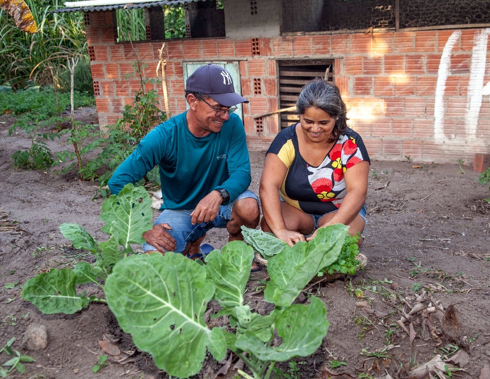
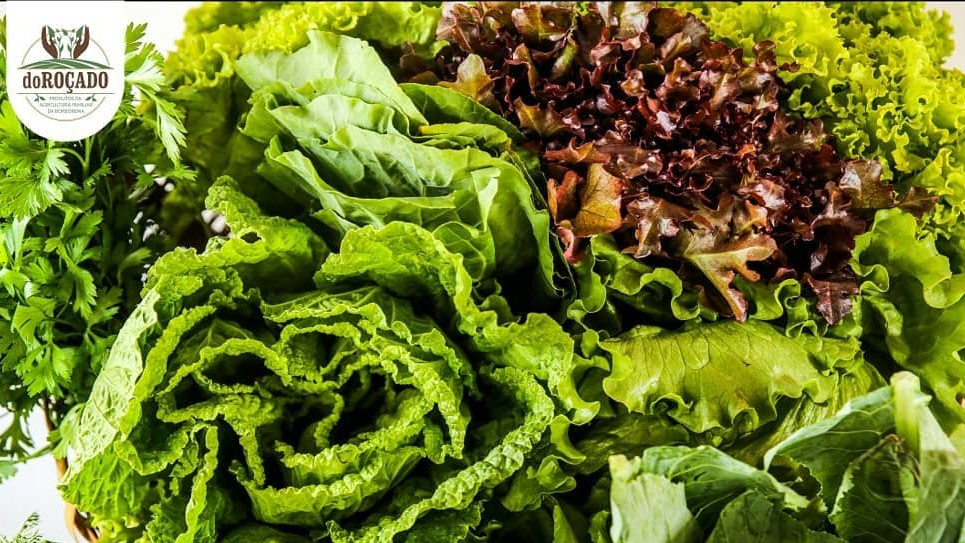

Produtos agroecológicos do roçado
Alimentos saudáveis, agricultura familiar e consumo consciente
Conheça a Quitanda Agroecológica de Remígio, um espaço que aproxima a comunidade de alimentos frescos, produtos regionais e práticas de produção que valorizam a terra, as famílias agricultoras e a sustentabilidade.
Sobre a Quitanda
A Quitanda Agroecológica nasceu com o propósito de aproximar a comunidade de alimentos mais saudáveis, naturais e produzidos com responsabilidade. Nosso objetivo é oferecer produtos de qualidade, fortalecendo o consumo consciente e a valorização de produtores locais.
Mais do que vender alimentos, buscamos incentivar hábitos saudáveis, respeito ao meio ambiente e uma relação mais próxima entre quem produz, quem comercializa e quem consome.
Nossa missão
Promover o acesso a alimentos naturais e agroecológicos, contribuindo para a saúde da comunidade e para o fortalecimento da produção local.
Produtos disponíveis na quitanda
A disponibilidade dos produtos e as informações nutricionais são referências aproximadas e podem variar conforme safra, preparo e fornecedor.
Informações nutricionais aproximadas
Uso tradicional e cuidados
Informações de caráter educativo. Não substituem orientação de nutricionista, médico ou outro profissional de saúde.
Por que valorizar a agroecologia?
A agroecologia valoriza formas de produção que respeitam o meio ambiente, a saúde das pessoas e o trabalho de produtores locais. Ao escolher produtos agroecológicos, a comunidade contribui para uma alimentação mais saudável e para práticas de consumo mais responsáveis.
- Fortalece produtores locais.
- Incentiva hábitos alimentares saudáveis.
- Valoriza alimentos frescos e naturais.
- Estimula o cuidado com o meio ambiente.
Cooperativa e fortalecimento da agricultura familiar
Por trás dos produtos comercializados na quitanda está o trabalho de famílias agricultoras, associações comunitárias e iniciativas coletivas que buscam fortalecer a produção agroecológica, gerar renda e ampliar o acesso da comunidade a alimentos saudáveis.
A cooperativa contribui para organizar a produção, facilitar o escoamento dos alimentos e valorizar o trabalho de homens, mulheres e jovens do campo.
- Apoia famílias agricultoras da região.
- Fortalece a comercialização direta e justa.
- Valoriza alimentos produzidos sem veneno.
- Contribui para segurança alimentar e renda local.


Memória, autonomia e diversidade no campo
As Sementes da Paixão representam a preservação de variedades tradicionais, cultivadas e cuidadas por famílias agricultoras. Elas carregam história, identidade, cultura alimentar e autonomia para as comunidades rurais.
Valorizar essas sementes é também valorizar a soberania alimentar, a produção diversificada e o respeito aos ciclos da natureza.
Receitas de Milho da Paixão
Receitas que utilizam os produtos da marca do Roçado, somando com ingredientes regionais e agroecológicos dos produtores locais.
Ingredientes
Modo de preparo
Localização e atendimento
📍 Endereço
Rua Bento Vitório, 13 - Remígio, PB
CEP: 58398-000
🕒 Horário
Segunda a sexta:
7h às 11h30 e 14h às 17h
🚚 Atendimento
Atendimento presencial e contato pelo WhatsApp para informações sobre entregas.
Quer saber quais produtos estão disponíveis hoje?
Entre em contato com a quitanda para consultar produtos, horários, localização ou tirar dúvidas sobre atendimento.